Blog & Info Kontraktor
Temukan panduan, tips, dan inspirasi seputar konstruksi rumah, renovasi, dan arsitektur bersama pakar kami.
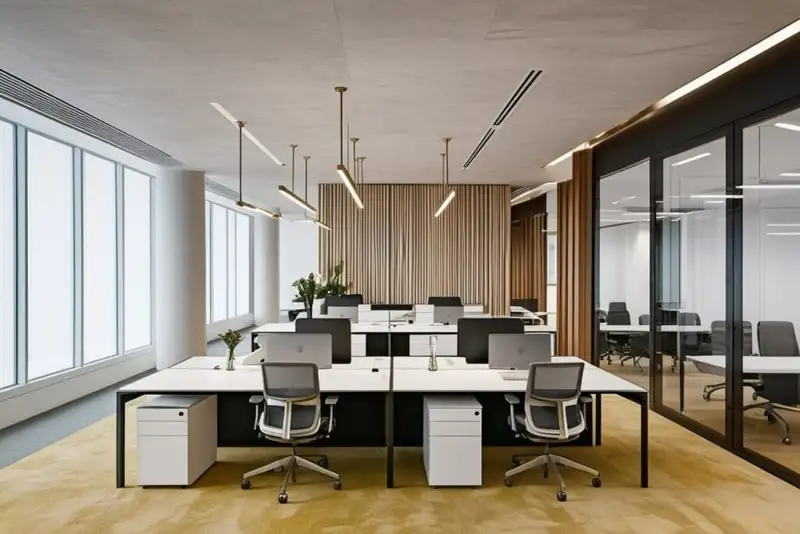
Warna Lemari Kantor Terbaik untuk Produktivitas Karyawan
Warna lemari kantor terbaik untuk mendukung produktivitas karyawan adalah warna netral seperti abu-abu dan putih, karena memberikan kesan rapi dan minim distraksi.
Baca Selengkapnya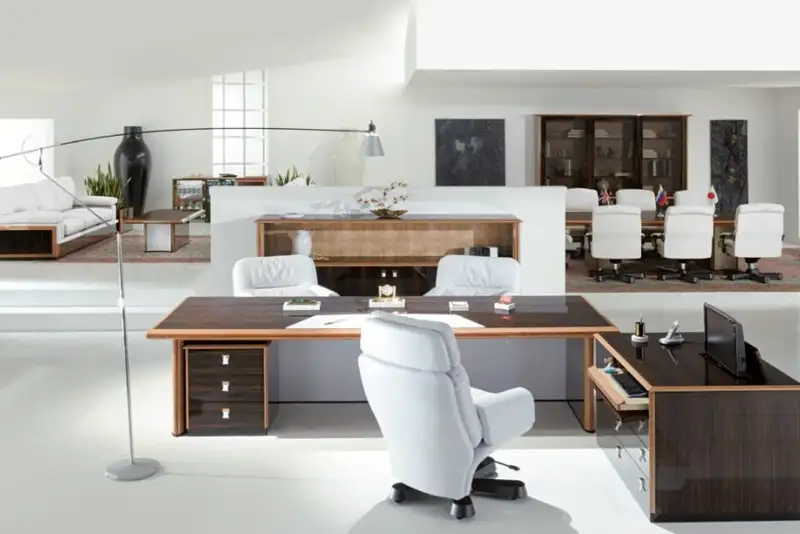
Jasa Kontraktor Lemari Kantor: Panduan Desain, Kunci, dan Biaya
Jasa kontraktor lemari kantor adalah layanan desain dan pembuatan lemari custom untuk kebutuhan penyimpanan arsip, buku, dan perlengkapan kerja di ruang kantor.
Baca Selengkapnya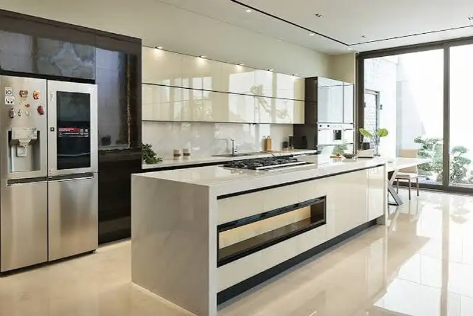
Kontraktor Kabinet Dapur Pantry Kantor Custom Jabodetabek
Kontraktor kabinet dapur pantry kantor custom di Jabodetabek adalah penyedia jasa yang merancang dan membangun kabinet pantry sesuai kebutuhan dapur bersih.
Baca Selengkapnya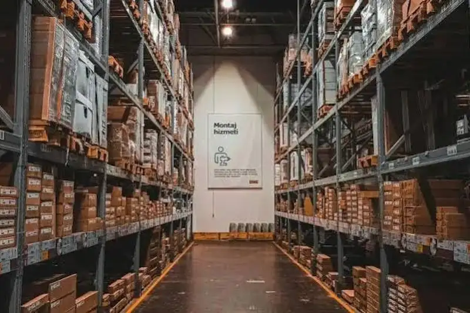
Cara Menghitung Kapasitas Beban Rak Lemari Arsip Berkas Berat
Kapasitas beban rak lemari arsip dihitung berdasarkan jenis material, ketebalan ambalan, dan panjang bentangan rak, karena ketiga faktor ini menentukan seberapa besar lendutan.
Baca Selengkapnya
Estetika Lemari Display Portofolio dan Tropi di Lobi Utama
Lemari display portofolio dan tropi di lobi utama adalah furnitur pajangan yang menampilkan pencapaian perusahaan, dan tampil lebih maksimal dengan kombinasi kaca tempered serta lampu LED strip.
Baca Selengkapnya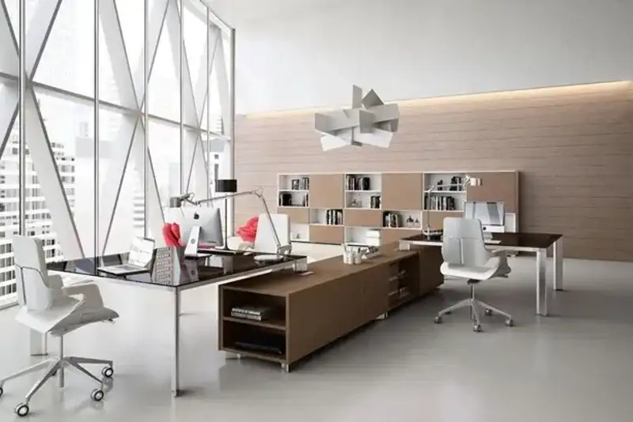
Jasa Kontraktor Interior Kantor Custom: Panduan Lengkap Memilih Kontraktor Furnitur Kantor
Jasa kontraktor interior kantor custom adalah layanan perancangan dan pembuatan furnitur kantor sesuai kebutuhan spesifik, mulai dari lemari display, rak arsip, hingga kabinet pantry.
Baca Selengkapnya
Jasa Kontraktor Interior Kantor Custom: Solusi Lengkap untuk Ruang Kerja Modern
Jasa kontraktor interior kantor custom adalah layanan perancangan dan pembuatan furnitur kantor sesuai kebutuhan spesifik, mulai dari pantry, lemari penyimpanan, hingga smart locker karyawan.
Baca Selengkapnya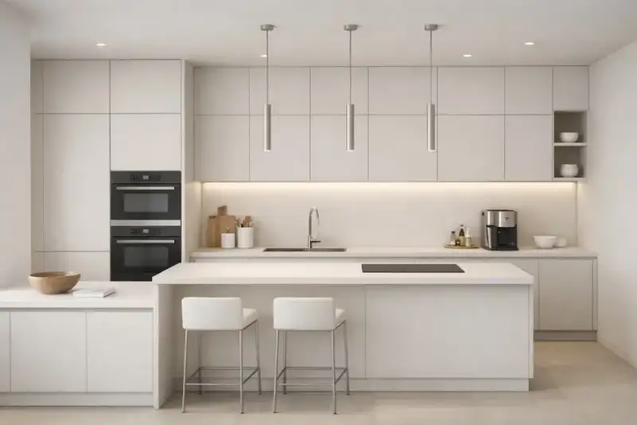
Kontraktor Kabinet Dapur Pantry Kantor Custom Jabodetabek
Kontraktor kabinet dapur pantry kantor custom Jabodetabek adalah penyedia jasa pembuatan kabinet dapur bersih untuk kebutuhan pantry kantor, baik untuk instansi pemerintah maupun perusahaan swasta di wilayah Jakarta, Bogor, Depok, Tangerang, dan Bekasi.
Baca Selengkapnya
Cara Menghitung Kapasitas Beban Rak Lemari Arsip Berkas Berat
Cara menghitung kapasitas beban rak lemari arsip berkas berat dilakukan dengan memperhitungkan bentang ambalan, ketebalan material, serta batas lendutan yang masih dianggap aman untuk beban tersebut.
Baca Selengkapnya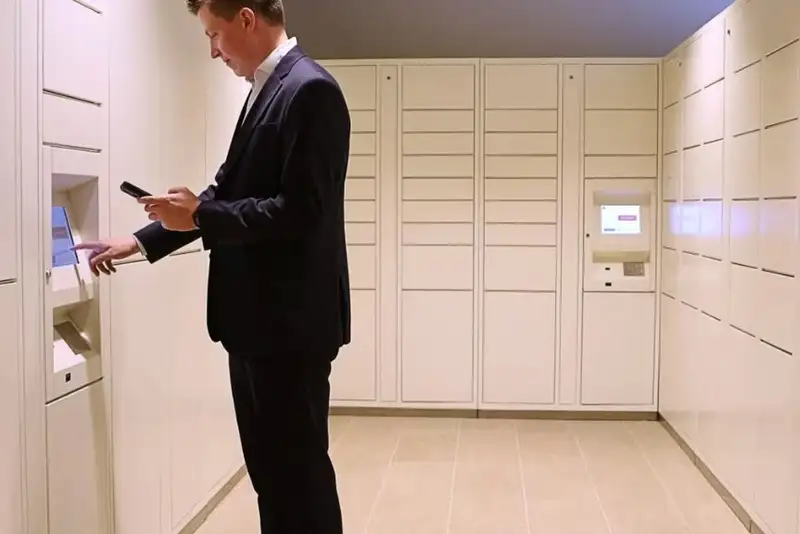
Penataan Smart Locker dengan Pengaman Sidik Jari Karyawan
Penataan smart locker dengan pengaman sidik jari karyawan adalah penyusunan unit locker yang dilengkapi sensor biometrik, dikombinasikan dengan material kaca tempered dan lampu LED strip untuk keamanan dan tampilan yang lebih modern.
Baca Selengkapnya
Jasa Kontraktor Interior Kantor Custom, Panduan Memilih Vendor Terpercaya
Jasa kontraktor interior kantor custom adalah layanan desain dan pembuatan furnitur kantor sesuai kebutuhan ruang, mulai dari locker, rak arsip, hingga kabinet pantry. Layanan ini membantu perusahaan mendapatkan furnitur yang pas ukuran, kuat, dan efisien.
Baca Selengkapnya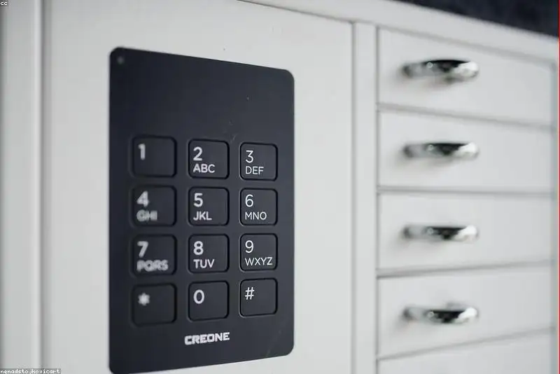
Jasa Pembuatan Lemari Kantor Bogor: Survei dan Desain 3D Gratis
Jasa pembuatan lemari kantor Bogor dengan survei lokasi dan desain 3D gratis adalah layanan yang memungkinkan klien mengukur kebutuhan ruang secara akurat serta melihat gambaran hasil akhir sebelum proses produksi dimulai, tanpa biaya tambahan di tahap awal.
Baca Selengkapnya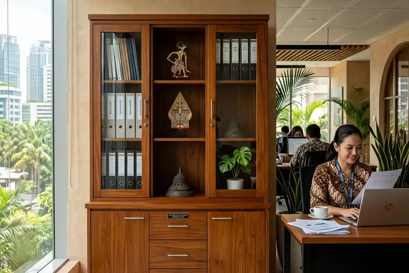
Tips Jitu Mencegah Rayap Menyerang Lemari Kayu Kantor Anda
Mencegah rayap menyerang lemari kayu kantor dapat dilakukan melalui kombinasi pemilihan material yang tepat, injeksi bahan pengawet kayu, penggunaan lem resin anti rayap, dan menjaga kelembaban ruangan tetap terkendali.
Baca Selengkapnya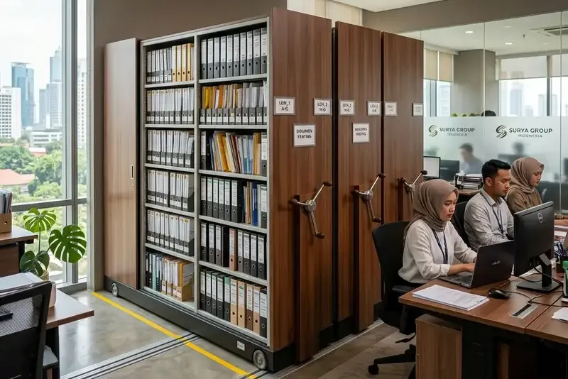
Inspirasi Lemari Arsip Geser untuk Efisiensi Ruang Berkas
Lemari arsip geser adalah sistem penyimpanan dokumen yang menggunakan mekanisme rel sehingga rak dapat dirapatkan tanpa memerlukan ruang ayun pintu, menjadikannya solusi efisien untuk ruang berkas kantor yang terbatas.
Baca Selengkapnya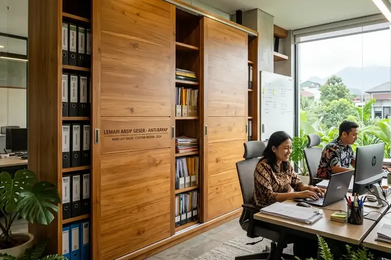
Jasa Kontraktor Lemari Kantor Bogor, Panduan Lengkap Sliding Cabinet Anti Rayap
Jasa kontraktor lemari kantor Bogor adalah layanan perancangan dan pembuatan lemari arsip atau lemari penyimpanan kantor secara custom, mulai dari survei lokasi, desain 3D, hingga proteksi anti rayap.
Baca Selengkapnya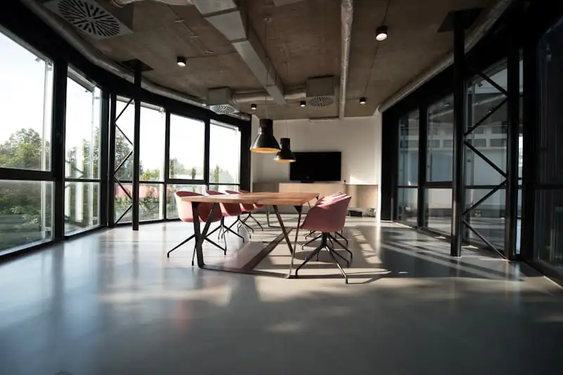
Kontraktor Pembuatan Kabinet Kantor Bekasi Terpercaya B2B
Kontraktor pembuatan kabinet kantor Bekasi adalah penyedia jasa yang berfokus pada produksi dan instalasi kabinet, cubicle, meja rapat, dan lemari berkas.
Baca Selengkapnya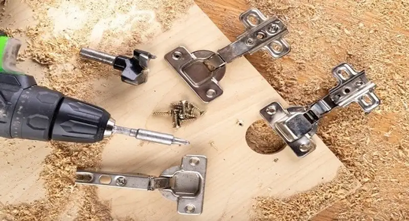
Pentingnya Memilih Engsel Sendok Heavy-Duty untuk Pintu Lemari
Engsel sendok heavy-duty adalah jenis engsel pintu lemari berbentuk cekung menyerupai sendok yang dirancang untuk menahan beban lebih berat.
Baca Selengkapnya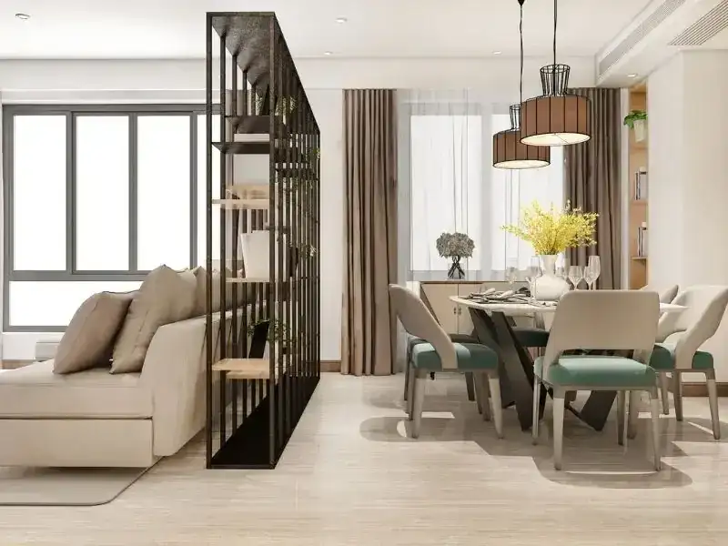
Tren Sekat Ruang Multifungsi dengan Lemari Dua Sisi
Sekat ruang multifungsi dengan lemari dua sisi adalah elemen partisi kantor yang berfungsi ganda sebagai pembatas ruang sekaligus tempat penyimpanan.
Baca Selengkapnya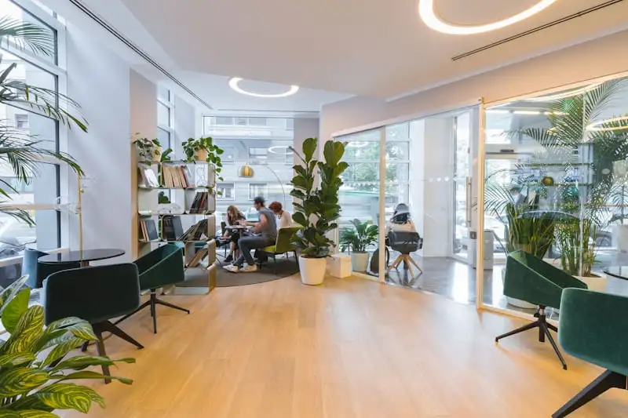
Jasa Kontraktor Interior Kantor: Panduan Memilih Vendor B2B yang Tepat
Jasa kontraktor interior kantor adalah layanan profesional yang menangani perancangan, pembuatan, dan pemasangan elemen interior kantor untuk kebutuhan bisnis.
Baca Selengkapnya
Estimasi Biaya Bikin Lemari Arsip Minimalis di Tangerang
Estimasi biaya bikin lemari arsip minimalis di Tangerang bergantung pada material dasar yang digunakan, jenis finishing, ukuran unit, dan komponen instalasi.
Baca Selengkapnya
Mengenal Finishing HPL (High Pressure Laminate) untuk Furnitur
Finishing HPL adalah lapisan pelindung permukaan furnitur berbahan dasar kertas kraft dan resin yang dipress dengan tekanan tinggi, dikenal karena ketahanannya terhadap gores.
Baca Selengkapnya
Model Kredensa Kayu Elegan untuk Ruang Direktur
Kredensa kayu elegan untuk ruang direktur adalah lemari penyimpanan rendah dengan desain minimalis yang biasanya menggabungkan serat kayu natural dan aksen list berwarna gold.
Baca Selengkapnya
Jasa Kontraktor Furnitur Kantor: Panduan Lengkap Memilih, Model, dan Estimasi Biaya
Jasa kontraktor furnitur kantor adalah layanan pembuatan furnitur custom seperti kredensa, lemari arsip, dan meja kerja, mulai dari desain hingga instalasi di lokasi.
Baca Selengkapnya
Jasa Pembuatan Lemari Kantor Custom Jakarta: Harga & Garansi
Jasa pembuatan lemari kantor custom di Jakarta umumnya mencakup survei ruang, desain, produksi, dan pemasangan lemari built-in dengan garansi konstruksi hingga dua tahun.
Baca Selengkapnya
Panduan Memilih Material Lemari: Multiplex, MDF vs Particle Board
Panduan memilih material lemari kantor mencakup perbandingan multiplex, MDF, dan particle board berdasarkan ketahanan beban dan kelembaban.
Baca Selengkapnya
Desain Lemari Tanam Minimalis untuk Kantor Sempit
Desain lemari tanam minimalis untuk kantor sempit adalah pendekatan built-in cabinet yang menempel langsung ke dinding atau sudut ruangan.
Baca Selengkapnya
Kontraktor Lemari Kantor Custom: Panduan Lengkap Desain, Material, dan Biaya
Kontraktor lemari kantor custom adalah penyedia jasa yang merancang dan membangun lemari tanam sesuai ukuran ruang kerja, mulai dari desain hingga pemasangan.
Baca Selengkapnya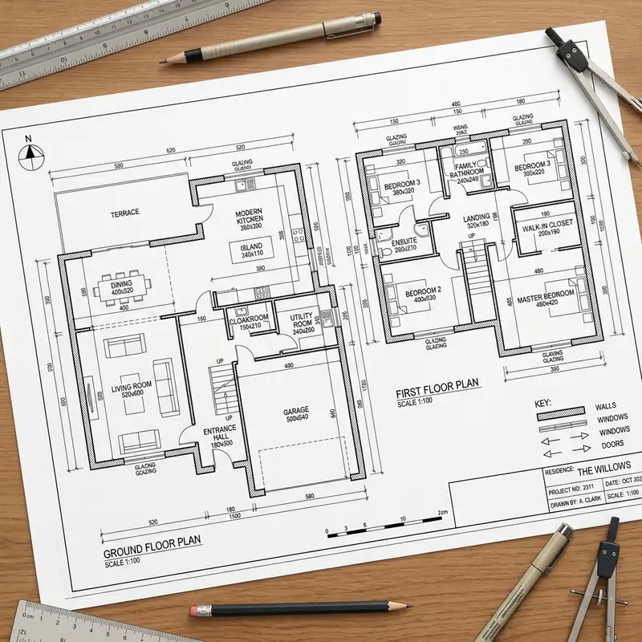
Cara Menghitung RAB Bangun Rumah Agar Tidak Over-Budget
Banyak pembangunan mangkrak karena salah hitung. Pahami rahasia cara menyusun Rencana Anggaran Biaya (RAB) yang presisi tanpa ada material yang terbuang.
Baca Selengkapnya
5 Tren Desain Fasad Rumah Minimalis Modern di Tahun Ini
Fasad rumah bukan hanya sekadar estetika, namun juga sirkulasi udara. Pelajari perpaduan roster, batu alam, dan jendela besar bergaya tropis.
Baca Selengkapnya
Panduan Memilih Material Pondasi Rumah Anti Gempa di Indonesia
Mengetahui struktur beton bertulang, cakar ayam, dan tiang pancang yang tepat untuk menjaga rumah Anda tetap aman dari guncangan gempa tektonik lokal.
Baca Selengkapnya